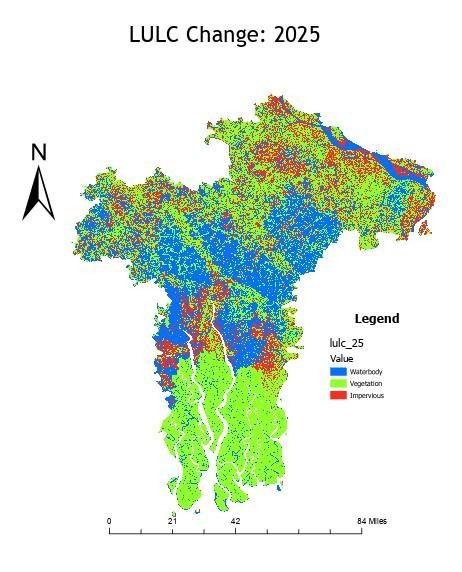
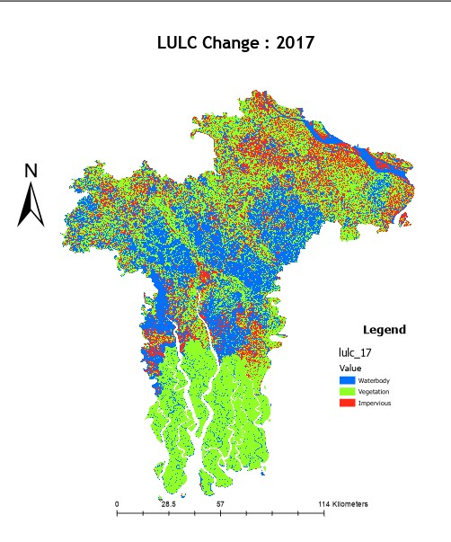
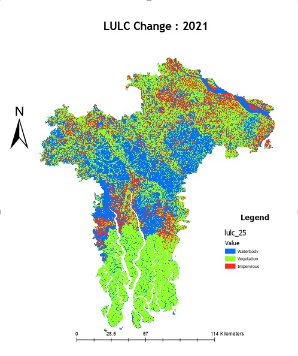
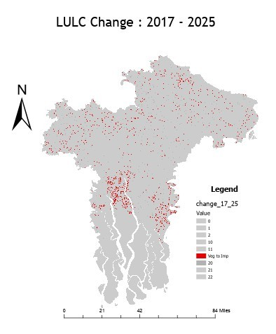
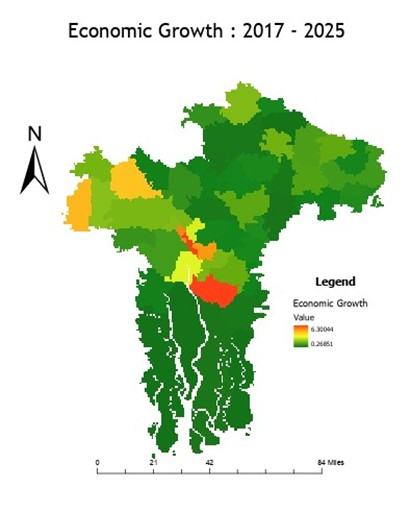
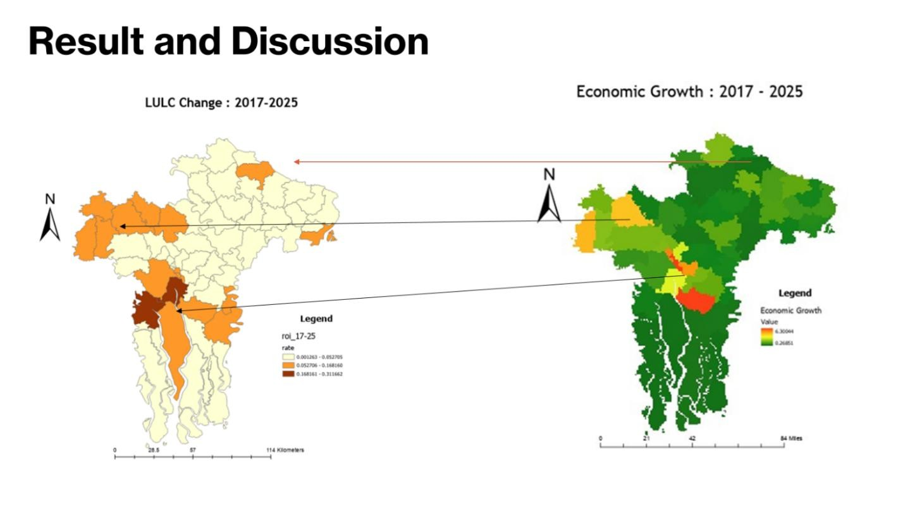
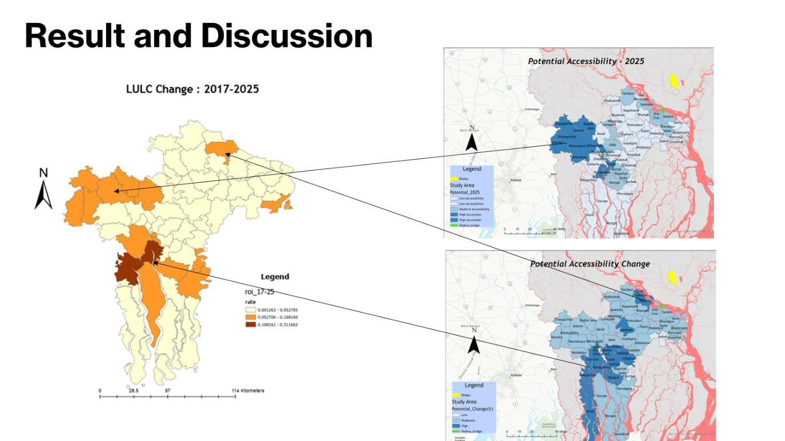

90.9% validation accuracy
The report records a 90.9% overall classification accuracy and κ ≈ 0.86, while noting spectral confusion between certain surface types.
A Sentinel-2 and Google Earth Engine study of vegetation, water, and impervious surfaces across southwestern Bangladesh, examining how observed land-cover patterns compare with accessibility and nighttime-light indicators.

The study classified three land-cover categories and compared local land transitions with nighttime lights and the related Padma accessibility project.
Source: GEO 653 report and presentation. The reported area totals differ between these documents; a methodological note appears below.
The opening of the Padma Bridge in 2022 improved road connectivity between Dhaka and southwestern Bangladesh. This exploratory study examines the spatial distribution of land-cover change around the broader corridor and compares it with modeled accessibility gains and satellite-derived nighttime-light intensity.
It builds on a related regional accessibility study, but asks a different question: Which places experienced vegetation-to-impervious transitions, and how do those spatial patterns compare with accessibility and nighttime-light indicators?
Mapping the classes separately in 2017, 2021 and 2025 makes changes visible, while the limitations of a three-class classification are important when interpreting urbanization.
Sentinel-2 was selected over the coarser Landsat 8 baseline to better represent a complex, fragmented landscape. The baseline shifted from 2015 to 2017, with imagery selected to reduce seasonal differences.
Images were mapped into waterbody, vegetation and impervious-surface categories. Independently collected yearly samples were used for supervised classification.
Random Forest and SVM were assessed with an 80% training / 20% testing split. The written report records approximately 90.9% overall accuracy and κ = 0.86, and selects Random Forest for subsequent mapping.
Classified rasters were analyzed with ArcGIS Raster Calculator and zonal summaries, including a vegetation-to-impervious conversion rate relative to the original vegetation area for each upazila.
The land-cover patterns were visually compared with VIIRS nighttime-light variation and with accessibility scores from the related GEO 519 model.
Scope note: The report describes spatial comparisons rather than an independent causal design; it does not provide a numerical correlation coefficient for the claimed relationship with accessibility or nighttime lights.
The report records a 90.9% overall classification accuracy and κ ≈ 0.86, while noting spectral confusion between certain surface types.
Batiaghata had the highest reported vegetation-to-impervious conversion rate among the study units, followed by Paikgachha (22.48%).
Maps suggest some overlap between land-cover conversion and higher nighttime lights or accessibility gains; the analysis does not isolate the effect of the bridge.
Selected results from Table 2 of the GEO 653 research report (2017–2025).
| Study unit | District | Reported conversion rate |
|---|---|---|
| Batiaghata | Khulna | 31.17% |
| Paikgachha | Khulna | 22.48% |
| Morrelganj | Bagerhat | 16.82% |
| KCC (Kotwali) | Khulna | 15.18% |
| Dumuria | Khulna | 14.05% |
These are class-transition rates relative to the original vegetation area for each unit, not the percentage growth of the entire built-up area or directly observed urban economic output.
The written report lists 2017 impervious area as 2,306.24 km² and describes a net 2017–2025 gain of 774.88 km²; the slides instead list 3,256.32 km² for 2017 and 2,306.24 km² for 2021. Because the annual area totals conflict, this page intentionally withholds a headline net change until the data are reconciled. The original report and presentation remain downloadable for transparency.
Maps and comparison figures come from the user's original GEO 653 report and slides. Click any image to see it larger. Map legends and category labels are preserved from the submitted documents.







The work is presented as a completed course research project, not a peer-reviewed publication or a confirmed causal impact assessment.
Download the submitted GEO 653 research paper and presentation. They provide the source figures, methods, and preliminary area tables, including results flagged for reconciliation above.
Related study: The Padma Corridor as a Spatial Transformer: Regional Accessibility. That complementary project provides the model-based accessibility measures used for comparison.
← Explore other research